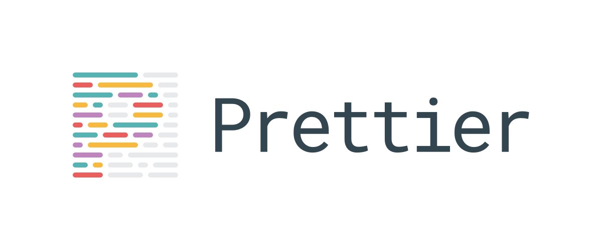

<html>
<head>
  <meta charset="utf-8">
  <title>戦いを終わらせるFormatter</title>
  <link rel="stylesheet" href="./lib/talkie.min.css">
  <link rel="stylesheet" href="./lib/talkie-default.min.css">
  <link rel="stylesheet" href="./lib/monokai-sublime.min.css">
  <style>
    .icon {
      border-radius: 50%;
      width: 200px;
    }

    [layout] > p {
      text-align: center;
    }
  </style>
</head>
<body>

<script layout="title" type="text/x-markdown">
# 戦いを終わらせるFormatter

2018-04-23 [@yuzu_441](https://twitter.com/yuzu_441)
</script>

<script layout="bullets-invert" invert type="text/x-markdown">
## 自己紹介


@yuzu_441

Lang: JavaScript, Rust  
推しメン: 白石麻衣（乃木坂46）
</script>

<script layout="bullets" type="text/x-markdown">
## これからギクシャクしてもらいます
</script>

<script layout="bullets" type="text/x-markdown">
## あなたはどっち派？

### (挙手制です🙋)
</script>

<script layout="code" type="text/x-markdown">
### セミコロン

```javascript
// 付ける
x = 1 + 1;

// 付けない
x = 1 + 1
```
</script>

<script layout="code" type="text/x-markdown">
### ()の前にスペース

```javascript
// 入れる
if ()

// 入れない
if()
```
</script>

<script layout="code" type="text/x-markdown">
### {}の位置 

```javascript
// 改行しない
if(x === y) {

// 改行する
if(x === y)
{
```
</script>

<script layout="code" type="text/x-markdown">
### カンマの後のスペース

```javascript
// 入れない
a = [1,2,3]

// 入れる
a = [1, 2, 3]
```
</script>

<script layout="code" type="text/x-markdown">
### 配列定義 

```javascript
// スペース空けない
a = [1, 2, 3]

// スペース空ける
a = [ 1, 2, 3 ]
```
</script>

<script layout="code" type="text/x-markdown">
keyの定義は辞書順で

```javascript
// 適当
obj = {
  name,
  age
}

// 辞書順
obj = {
  age,
  name
}
```
</script>

<script layout="bullets" type="text/x-markdown">
### 争いをやめるためにコード規約を定義しよう

- [airbnb](https://github.com/airbnb/javascript)
- [Google Code Style](https://github.com/google/styleguide)
- [PEP8(python)](http://pep8-ja.readthedocs.io/ja/latest/)
</script>

<script layout="bullets" type="text/x-markdown">
### ルールができて平和に。。。
</script>

<script layout="bullets" type="text/x-markdown">
### 確認する仕事ができた

書いたコードは本当にコード規約に沿っているのか  
人間が確認意識して100%守るのは無理
</script>

<script layout="bullets" type="text/x-markdown">
### Lint

lintによって機械的にチェックする
</script>

<script layout="bullets" type="text/x-markdown">
## 平和な世界が訪れた？🤔
</script>

<script layout="bullets" type="text/x-markdown">
## 何も解決していない!!

世界にはまだ戦いが溢れている
</script>

<script layout="bullets" type="text/x-markdown">
### 世界はフォーマッターを提供し始めた

- Goにはgofmt
- Rustにはrustfmt
</script>

<script layout="bullets" type="text/x-markdown">
### 言語が書き方を強制する

言語側がフォーマット（コード規約）を強制してきた 
これで「この言語ではこれがルール」と争いをなくすことができる
</script>

<script layout="bullets" type="text/x-markdown">
## しかしみんな大好き JS にそんなものはない
</script>

<script layout="bullets-invert" invert type="text/x-markdown">

</script>

<script layout="bullets" type="text/x-markdown">
### Prettier

- Node.jsで書かれたフォーマッター
- エディタに依存しない
- 色んなエディタをサポート
- Js以外もフォーマットできる
</script>

<script layout="code" type="text/x-markdown">
```javascript
function hoge(x, y, z)
{
  return x + y + z
}

const frontend = 1
const backend = 2
const backendForFrontEnd = 3

console.log(
  hoge(
    frontend,
    backend,
    backendForFrontEnd
  )
)
```
</script>

<script layout="code" type="text/x-markdown">
```javascript
function hoge(x, y, z) {
  return x + y + z;
}

const frontend = 1;
const backend = 2;
const backendForFrontEnd = 3;

console.log(hoge(frontend, backend, backendForFrontEnd));

```
</script>

<script layout="bullets" type="text/x-markdown">
### JS

- ES2017
- JSX
- Flow
- TypeScript
- Vue
- JSON
</script>

<script layout="bullets" type="text/x-markdown">
### CSS

- CSS3+
- Less
- SCSS
- styled-components
- styled-jsx
</script>

<script layout="bullets" type="text/x-markdown">
### データとか

- GraphQL
- GraphQL Schemas
- CommonMark
- Github Flavored Markdown
</script>

<script layout="bullets" type="text/x-markdown">
### WIP

- Elm
- Java
- PHP
- PostgreSQL
- Python
- Ruby
- Swift
</script>

<template
  layout="title"
  backface="./image/prettier.svg"
  type="text/x-markdown">
</template>


<script layout="bullets" type="text/x-markdown">
## 実際にプロジェクトで採用してる

save時にフォーマットするようにするとめっちゃ便利
</script>

<script layout="bullets-invert" invert type="text/x-markdown">
# <span style="color: red;">P</span><span style="color: orange;">r</span><span style="color: yellow;">e</span><span style="color: green;">tt</span><span style="color: aqua;">i</span><span style="color: blue;">e</span><span style="color: violet;">r</span>に従うのです
</script>

<script src="./lib/highlight.min.js"></script>
<script src="./lib/talkie.min.js"></script>
<script>
  var talkie = Talkie({wide: true});

  talkie.key('s').subscribe(talkie.next$);
  talkie.key('n').subscribe(talkie.next$);
  talkie.key('a').subscribe(talkie.prev$);
  talkie.key('p').subscribe(talkie.prev$);

  document.addEventListener('DOMContentLoaded', function() {
    talkie.changed.subscribe(function(current) {
      console.clear();
      // print presenter notes
      console.info(talkie.notes[current.getAttribute('data-page')]);
    });
  });
</script>
</body>
</html>
